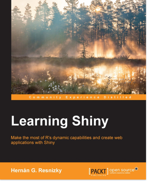
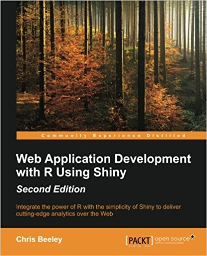

IN DEV
shiny packageThe package provides a web framework for building web applications and turn analyses into interactive web applications.
We can develop Shiny applications in RStudio and deploy these applications online with Shiny Server, Shiny Server Pro or Shinyapps.io.
The following packages and widgets are interactive:
ggvis (similar to ggplot2) for charts and some maps.Of course, other visualization packages work with Shiny.
We can either make a package interactive (using ggvis function for example) or add more interactivity to an htmlwidget (dygraphs for example).
dygraphs package.plotly package.rbokeh package?highcharter package.datatables package.ggedit package; [blog article 1]](https://www.r-bloggers.com/ggedit-0-1-1-shiny-module-to-interactvely-edit-ggplots-within-shiny-applications/) and blog article 2.We start with these tutorials, find other video tutorials online or books.
|  |  |
To do:
This R Markdown document is made interactive using Shiny. Unlike the more traditional workflow of creating static reports, you can now create documents that allow your readers to change the assumptions underlying your analysis and see the results immediately.
To learn more, see Interactive Documents.
You can embed Shiny inputs and outputs in your document. Outputs are automatically updated whenever inputs change. This demonstrates how a standard R plot can be made interactive by wrapping it in the Shiny renderPlot function. The selectInput and sliderInput functions create the input widgets used to drive the plot.
library(shiny)
inputPanel(
selectInput("n_breaks", label = "Number of bins:",
choices = c(10, 20, 35, 50), selected = 20),
sliderInput("bw_adjust", label = "Bandwidth adjustment:",
min = 0.2, max = 2, value = 1, step = 0.2)
)
renderPlot({
hist(faithful$eruptions, probability = TRUE, breaks = as.numeric(input$n_breaks),
xlab = "Duration (minutes)", main = "Geyser eruption duration")
dens <- density(faithful$eruptions, adjust = input$bw_adjust)
lines(dens, col = "blue")
})It’s also possible to embed an entire Shiny application within an R Markdown document using the shinyAppDir function. This example embeds a Shiny application located in another directory:
shinyAppDir(
system.file("examples/06_tabsets", package = "shiny"),
options = list(
width = "100%", height = 550
)
)Note the use of the height parameter to determine how much vertical space the embedded application should occupy.
You can also use the shinyApp function to define an application inline rather than in an external directory.
In all of R code chunks above the echo = FALSE attribute is used. This is to prevent the R code within the chunk from rendering in the document alongside the Shiny components.